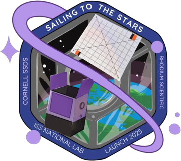
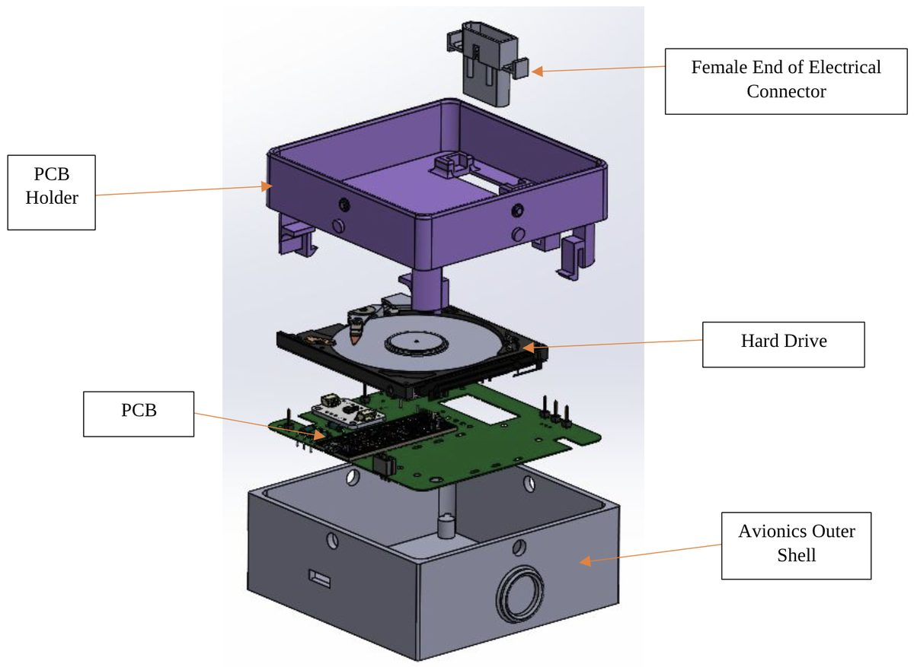
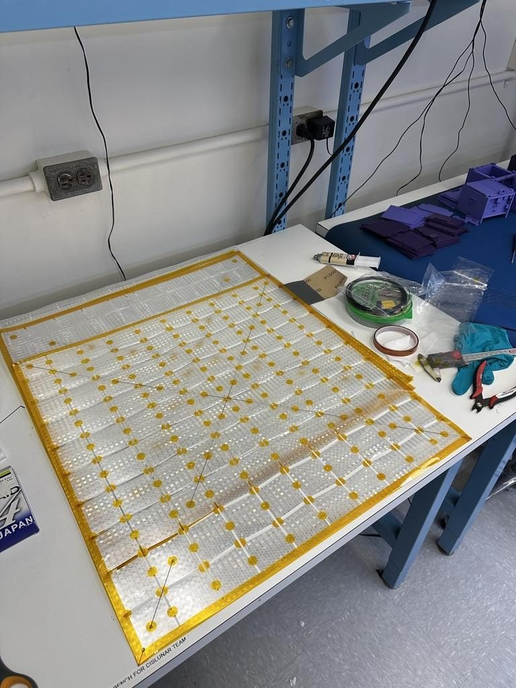
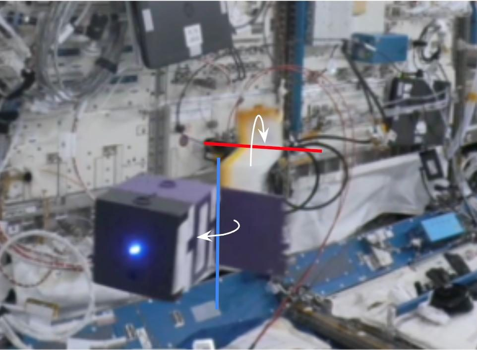
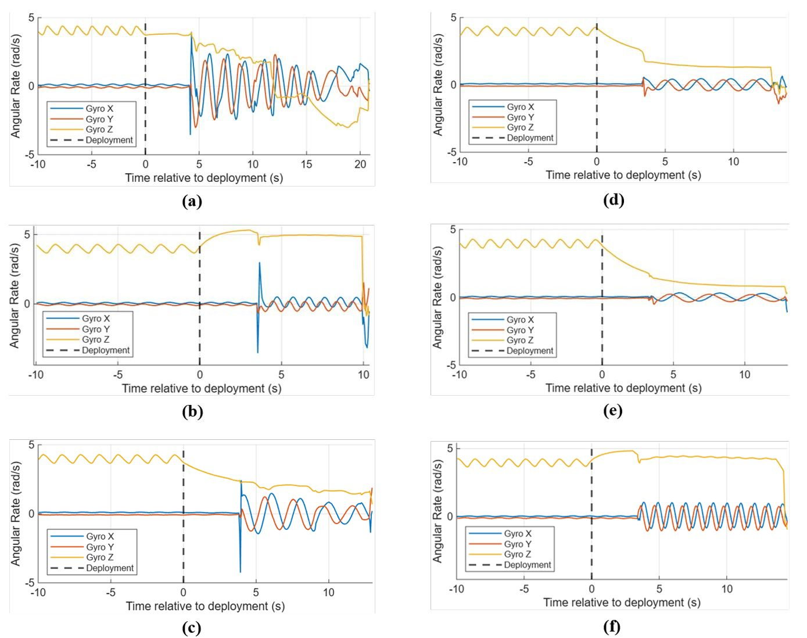
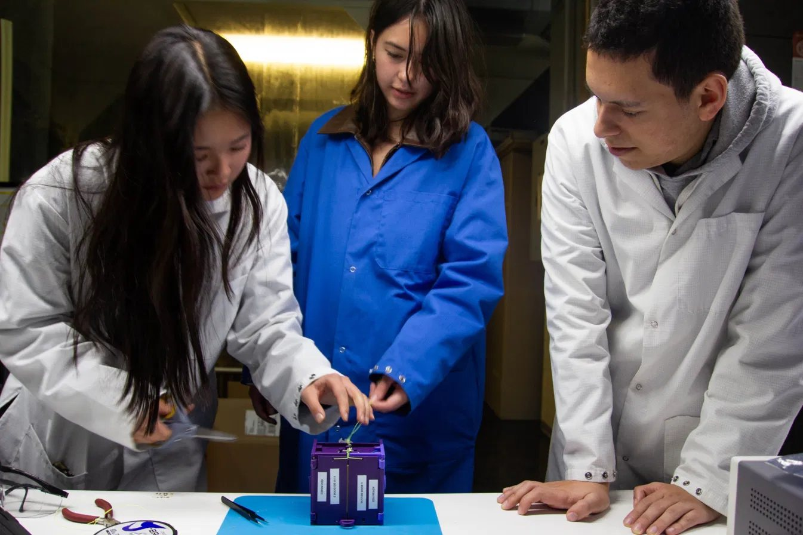
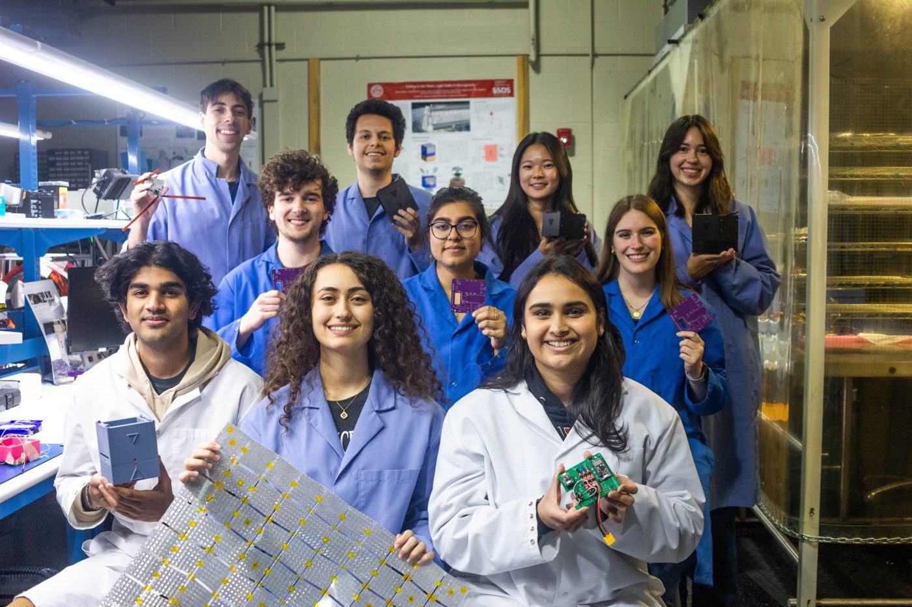
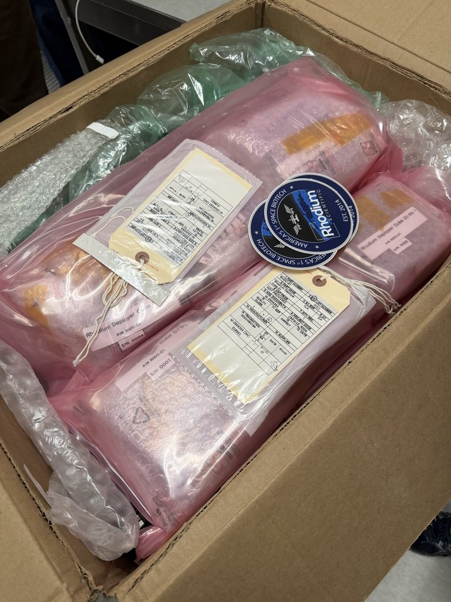

Sailing to the Stars · Cornell SSDSLight sails released by hand aboard the ISS

ISS deployment video ↗







Video · ISS deployment, August 2025
- Deployments
- 63 per deployer design
- Designs
- 2Single-Door, Double-Door
- Launch
- 1 Aug 2025SpaceX Crew-11
- Flight hardware
- 8 + 3payload sections, avionics cubes
Sailing to the Stars tested free-flying light sails inside the International Space Station, comparing two deployer designs across six astronaut-run deployments. I helped carry the mechanical design from engineering units to flight hardware and first-authored the mission’s mechanical design paper.
My role
Mechanical subteam, Fall 2024 to Spring 2025. I owned the CAD for the avionics section and its interface to the sail payload, ran engineering-unit tests ahead of the Flight Analysis Readiness Review, led production of the burn-wire filament actuators that release each door, built flight sails, and tied the release line for every flight-unit test.
Why it matters
Light sails are pushed by sunlight alone, and future missions could pair them with gram-scale ChipSats. Little flight data exists on how a sail and its deployer move during release, so the experiment measured both with an onboard IMU and cabin video.
Result
All six sails released on command. Video and IMU data showed the Double-Door deployer was the more stable design, with straighter sail release and no off-axis spike in angular rate. None of the sails opened fully; the team traced this mainly to nitinol temperature and long stowage, which now drives storage tests for the next mission.
Skills applied
- Flight hardware CAD in SolidWorks
- Tolerance iteration for a rattle-free interface
- Burn-wire release mechanisms
- Miura-folded sail assembly with nitinol frames, epoxy bonding
- Soldering and wire routing
- Verification testing: pin, separation, shear, vibration
- Technical writing: first-author conference paper
| Run | Outcome | Sail fold vs. door hinge | Observed |
|---|---|---|---|
| SD-1 | Unstable | Perpendicular | Sail hit the module wall |
| SD-2 | Stable | Aligned | Emerged arced, oscillated down the bay |
| SD-3 | Unstable | Perpendicular | Rotated 180° end over end |
| DD-1 | Stable | Aligned | Emerged arced, rotated about its long axis |
| DD-2 | Stable | Aligned | Rotated 180° while traveling down the bay |
| DD-3 | Stable | Aligned | Rotated 180° while traveling down the bay |
Technical details
- Modular architecture. One reusable Avionics Cube mates with swappable Payload Sections, so six deployments needed only three avionics units. I added PCB-holder height so the holder and chassis, not the electrical connector, set the mating fit.
- Print correction. Prints came out systematically thinner than CAD, so I thickened the PCB holder walls to recover the tight fit.
- Post-FARR changes. Chamfered screw holes so fasteners sit flush, extended a side panel to cover an exposed latch spring, and raised the avionics shell so a protruding LED no longer kept the unit from sitting level.
- Sail packing. Each sail is Miura-folded, a rigid-origami pattern that collapses the membrane into a compact stack and lets it open in one motion when the nitinol wires spring back.
- Filament actuator redesign. Replaced the coiled center wire with a straight diagonal segment on the Double-Door units, so the fishing line always contacts the heated wire and severs reliably.
- Lesson. Ground tests showed sail orientation had no significant effect on whether a sail deployed. In flight, both unstable runs had the sail folded perpendicular to the door hinge, so fold orientation matters for stability even when release succeeds.
| Test | Single-Door | Double-Door | Result |
|---|---|---|---|
| Pin removal | 0.25 kg | 0.25 kg | Pass |
| Pin removal, 2nd safety | 0.4 kg | 0.7 kg | Pass |
| Chassis separation | 1.7 kg | 0.8 kg | Pass |
| Sail force on door | 0.30 kg | 0.35 kg | Pass |
| Pin shear | Factor of safety 10 | Pass | |
| Launch vibration | No mechanical or electrical failure | Pass | |